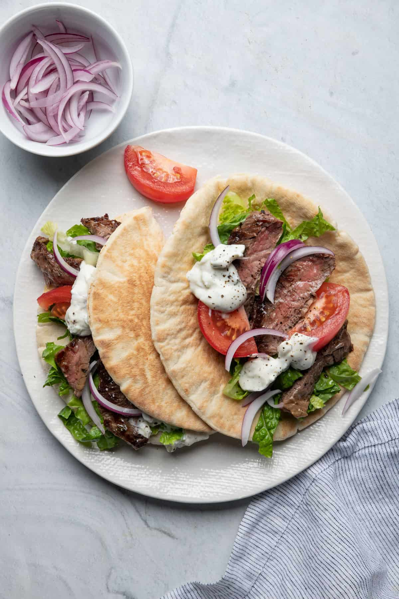

Steak Gyros

Ingredients
For Prep
- ½ cup olive oil
- 1 tablespoon oregano
- 1 tablespoon red wine vinegar
- 2 garlic cloves grated
- 1 ½ pounds flank or skirt steak trimmed
- salt and pepper to taste
For Serving
- 4 pocketless small pitas warmed
- romaine lettuce shredded
- ½ red onion thinly sliced
- 1 tomato thinly sliced
- Tzatziki
Steps
- In a large, shallow bowl, mix oil, oregano, vinegar, and garlic. Add steak and toss to fully coat. Cover with plastic wrap and marinate at least 30 minutes or up to 4 hours, flipping the steak halfway through. Remove from fridge at least 1 hour prior to cooking.
- Preheat grill, grill pan, or large cast iron skillet, to medium-high heat. Season both sides of steak generously with salt and pepper. Let excess marinade drip off steak and transfer steak to pan. Cook until golden brown, 5-7 minutes per side for medium rare.
- Transfer steak to a cutting board and allow meat to rest for 5 minutes. Slice steak into 1/2-inch pieces across the grain.
- Assemble gyros by stuffing pita halves with lettuce, onions, tomatoes, and steak. Drizzle with tzatziki sauce and serve immediately.